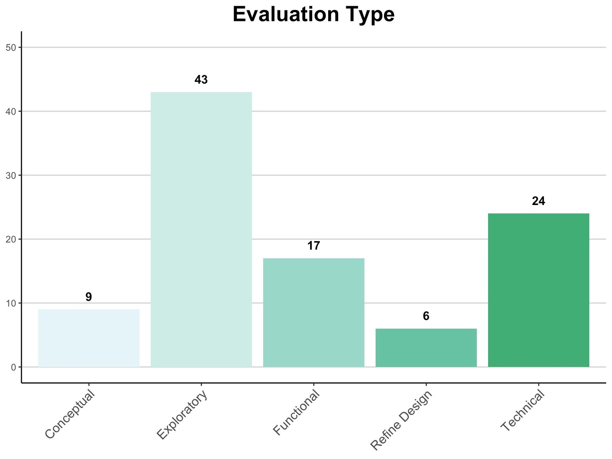
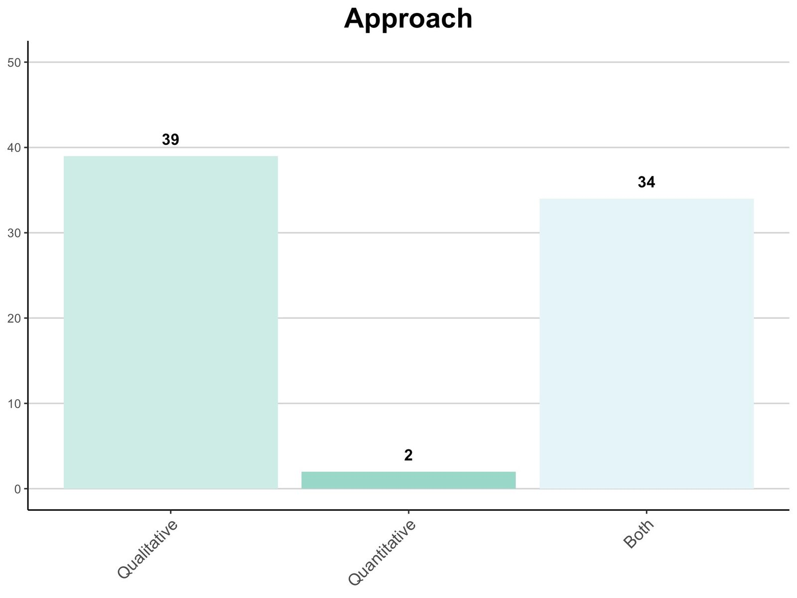
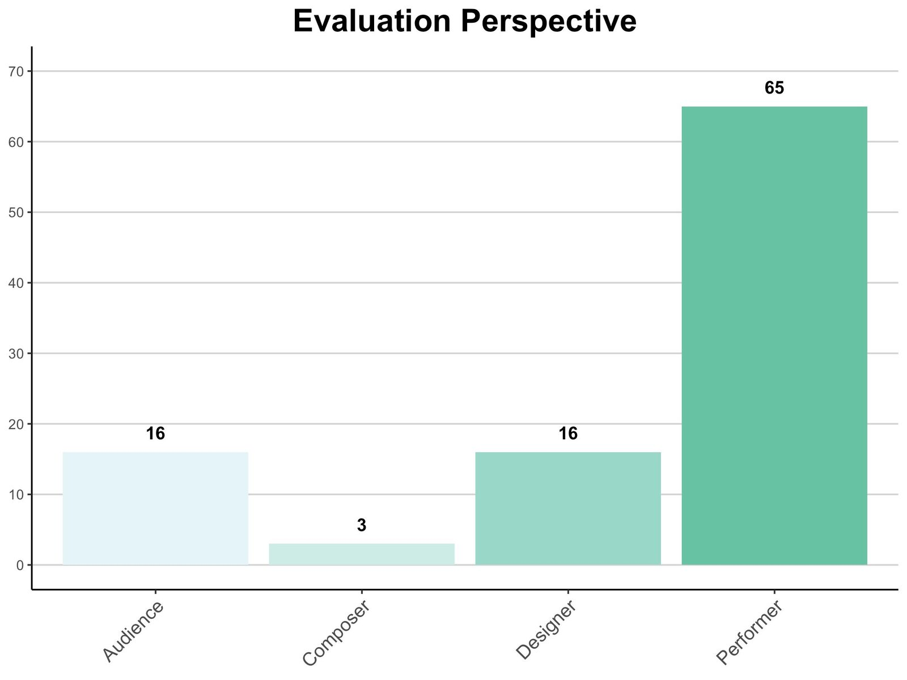
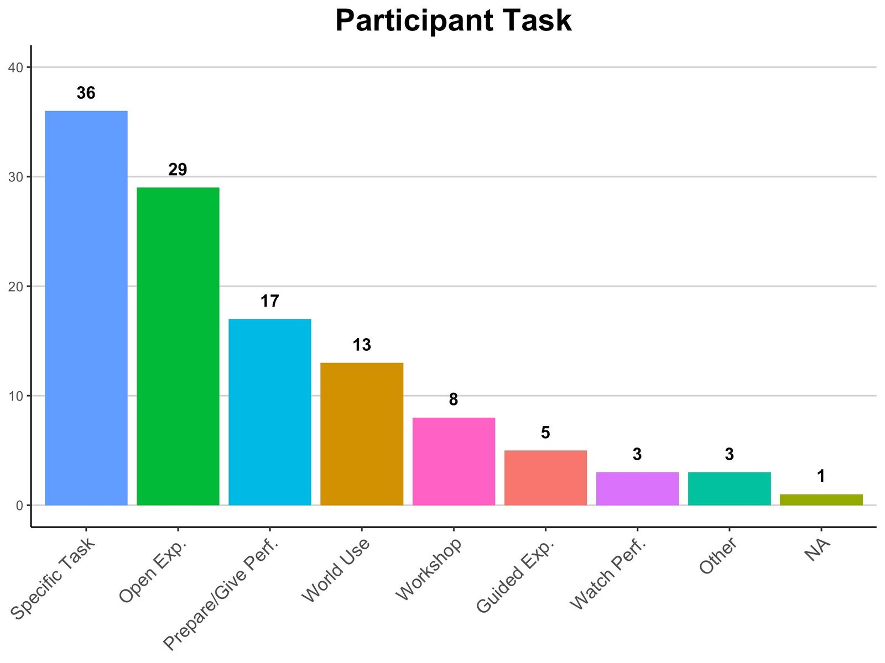
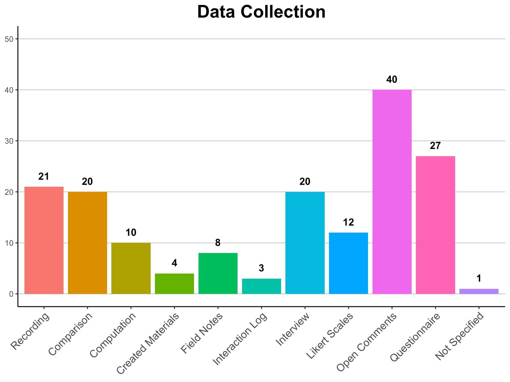
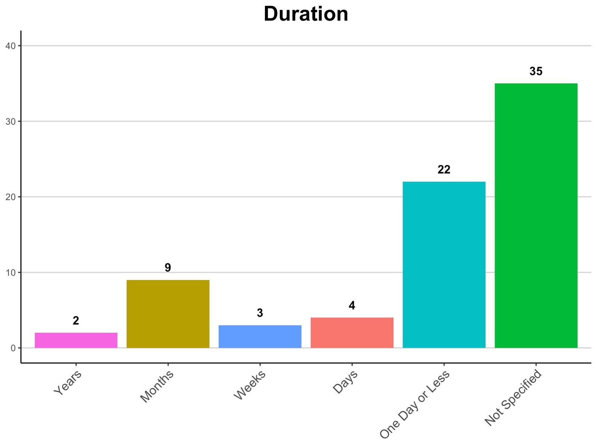

Embracing Less Common Evaluation Strategies for Studying User Experience in NIME
Abstract
Assessment of user experience (UX) is increasingly important in music interaction evaluation, as witnessed in previous NIME reviews describing varied and idiosyncratic evaluation strategies. This paper focuses on evaluations conducted in the last four years of NIME (2017 to 2020), compares results to previous research, and classifies evaluation types to describe how researchers approach and study UX in NIME. While results of this review confirm patterns such as the prominence of short-term, performer perspective evaluations, and the variety of evaluation strategies used, they also show that UX-focused evaluations are typically exploratory and limited to novice performers. Overall, these patterns indicate that current UX evaluation strategies do not address dynamic factors such as skill development, the evolution of the performer-instrument relationship, and hedonic and cognitive aspects of UX. To address such limitations, we discuss a number of less common tools developed within and outside of NIME that focus on dynamic aspects of UX, potentially leading to more informative and meaningful evaluation insights.
**Author Keywords
Evaluation, Digital Musical Instruments, Review, Dynamic Factors, Cognition, Hedonic Factors, User Experience
**CCS Concepts
Applied computing → Sound and music computing;
Human centred computing → HCI design and evaluation methods; Interaction design process and methods
1. Introduction
Evaluation in NIME is of crucial importance as it allows designers to gain insight into how their technologies work in a real world context, discover user interaction strategies, and determine whether a particular design iteration achieves its goals. Several reviews [1][2][3][4] have examined evaluation in NIME to define the term and explore how evaluation is carried out. The research presented here adopts methods and classification schemes from previous reviews, and defines a typology of evaluation goals to explore how UX-focused evaluations have been conceptualized and executed in recent NIME research. While UX can be defined in many ways, this paper will adopt a broad definition: a research area that focuses on subjective experiential aspects of individuals’ interactions with technology, such as aesthetics, emotion, engagement, motivation, and frustration, among others.
This paper begins by discussing the conceptualization of evaluation in NIME and summarizing findings of previous reviews. It provides the theoretical foundation and outlines methods used in the current research, which consists of a review of published NIME proceedings from 2017 to 2020. This research takes the form of a systematic literature review, characterized by specific goals, defined search strategies and inclusion/exclusion criteria, and target information to be extracted and presented (cf. [5][6]). Results are presented, compared with previous reviews, and their implications are discussed. Based on these results, we identify limitations of current UX evaluation strategies and identify a number of less common tools that show potential for studying dynamic aspects of UX in NIME. The final section acknowledges limitations of the approach used, suggests methodological improvements, and offers possibilities for further analysis.
2. Background
2.1 Evaluation in Music Interaction
Evaluation in technology development is inextricably tied to design, and each provide information complementary to the other [7]. Ongoing evaluation throughout development allows designers to assess whether devices operate as intended, examine interaction strategies employed by users, and understand how users experience these interactions.
2.1.1 Music Interaction
Music interaction describes the intersection of music and human-computer interaction (HCI) [8]. Tools borrowed from classical HCI are beneficial in understanding DMI usability [9], though usability alone does not provide a complete picture of a musician’s experience using an instrument. While task-based quantitative evaluations can be informative, there is also value in the use of more open qualitative methods to study affective and creative aspects of an interface [4]. Johnston [10] suggests that “while ergonomics and efficiency are important, they are not the primary determinants of … quality" and that evaluation in NIME should expand its focus to become “a broader study into performers and their creative practice in the context of their use of the new instrument." There is value in measuring task performance, though exploratory approaches to evaluation that observe how individuals adapt to and use technology may provide more useful insight when the goal of a designer is to “provide creative tools for creative professionals” [11].
2.1.2 Experience-Focused vs. Task-Focused Evaluation
Research in HCI and NIME shows a trend towards experienced-focused over task-focused evaluations [3][12][13]. Experience-focused evaluations provide a more user-centric perspective on interaction with technology [14]. Jack, Harrison, & McPherson [15] suggest that an ideological shift in the consideration of technologies presented at NIME from ‘prototypes’ to ‘research products’ would help re-frame the notion of evaluation in a more holistic manner. According to Springett [16], the aim of UX-focused evaluations is “to support the iterative development of systems by giving designers and other stakeholders meaningful insights into the nature and significance of affective factors in interaction." Ultimately, “whilst task-based methods are suited to examining usability, the experience of interaction is essentially subjective and requires alternative approaches for evaluation" [4].
2.1.3 Aspects of UX in NIME
When comparing evaluation in music interaction versus traditional HCI, a number of unique requirements emerge. First is the need to investigate UX without disrupting a performer’s musical task [4][13]. For example, the use of ‘think-aloud’ protocols is not possible when evaluating performers’ experiences with DMIs requiring continuous breath control [4]. Short-term temporal aspects of interaction also differ; music interaction places different temporal demands on device and user than those of traditional HCI [9]. Longitudinal factors are also a consideration, as practice, skill-development, and accumulation of expertise occur over extended spans of time [2], as performers build relationships with their instruments.
In any NIME evaluation, one should consider an interface’s target user. The distinction between novices and expert performers is crucial. While interaction with music in some form is almost universal, DMIs may be designed for a number of target groups, including non-musicians, amateurs, experts, and individuals with disabilities [17]. The difference in musical skill level across these groups is significant, and the nature of interaction is likely to change over time as users interact, practice, compose, and perform with a DMI. Design goals and evaluation strategies used to examine UX with each of these populations are also likely to differ.
Of particular relevance in this paper are hedonic and cognitive aspects of UX, and how these factors change over time spent interacting with an instrument. Hedonic factors relate to affect and emotion, while cognitive factors relate to psychological constructs, including expertise, motivation, and conceptualizations [18]. These two categories are closely intertwined and have considerable influence on one another [19][20].
2.2 Evaluation in Review
In a review of published proceedings from NIME 2006 to 2008, Stowell et al. [4] comment on a notable lack of formal and structured evaluation. Barbosa et al. [1] identify a similar pattern in published proceedings from 2009 to 2011. This limitation, in combination with low participant numbers in evaluation studies, proves problematic in generalizing user test outcomes and allowing researchers to build on each others’ work [4].
A second review conducted by Barbosa et al. [2] investigated the meaning of “evaluation" in published posters and papers from NIME 2012 to 2014. Results indicated that the conceptualization of “evaluation" within the community was inconsistent, and many evaluations did not report significant information such as goals, criteria, or methodology, that would be necessary for replication or to provide meaningful information.
Brown, Nash, & Mitchell’s [3] meta-analysis of music interaction evaluations reviewed literature from the International Computer Music Conference (ICMC), Sound and Music Computing (SMC) conference, and NIME from 2014 to 2016. This review focused specifically on UX factors in evaluation and the increased emphasis on UX within NIME. They note the continued prevalence of informal methodologies, and point out that, while UX components of aesthetics and usability are commonly assessed, other UX factors such as enchantment, motivation, and frustration are often neglected.
Overall, previous reviews suggest many NIME evaluations are informal, idiosyncratic, and short-term, and that more structured and formal methods are seldom used to evaluate UX [21].
3. Objectives & Methodology
We conduct a new review of NIME evaluations with two objectives: first, to compare results of this review (conducted on published proceedings from 2017 to 2020) to those of previous reviews (see section 2.2), and second, to discuss patterns in evaluation strategies and implications of these patterns for UX-focused evaluation.
Evaluations were classified based on several characteristics. In addition to using classifications from [2] and [3] to produce comparable results, we identified evaluation types based on researchers’ higher level evaluation goals.
3.1 Inclusion Criteria
To be included in the pool, a paper was required to (1) present and (2) evaluate a piece of technology, installation, or performance. Text analysis was performed on titles and abstracts of all 411 papers (2017: 105; 2018: 92; 2019: 88; 2020: 126) to identify keywords related to presentation and evaluation. This methodology is similar to that employed by [2] and [3]. Keywords were selected based on the authors’ initial review of the papers as well as visualizations presented in [2] and [3]. Keywords for each inclusion criterion are listed in Tables 1 and 2.
Table 1: Inclusion Strings for Criterion 1: Presentation
String | Frequency |
|---|---|
demonstrat* | 39 |
present* | 198 |
proof-of-concept | 4 |
prototyp* | 48 |
trial* | 11 |
Table 2: Inclusion Strings for Criterion 2: Evaluation
String | Frequency |
|---|---|
assess* | 12 |
evaluat* | 72 |
experiment* | 61 |
interview* | 12 |
method* | 59 |
qualitative | 10 |
quantitative | 5 |
questionnaire | 3 |
result | 97 |
scale | 17 |
stud* | 117 |
survey* | 11 |
test* | 28 |
3.2 Pool Refinement
The initial corpus (n = 173) contained papers with titles and/or abstracts containing at least one string representing each criterion. The pool was then refined by removing papers that did not use the string in the correct sense (e.g. “... audience of students ..." [22], “... live experimental sound ..." [23]), resulting in a refined pool of n = 99papers (24.1% of published proceedings from NIME 2017 to 2020).
3.3 Data Coding Procedure
Papers in the refined pool were reviewed in detail and evaluations were described using six classifications. (1) Evaluation type refers to the overall purpose or goal. Type categories were considered exclusive, and only the category that applied best was used. (2) Evaluation approach refers to whether data collected was qualitative, quantitative, or mixed. (3) Data collection refers to the methods used during evaluation, as defined in [3], and was non-exclusive (one evaluation might use multiple methods). (4) Evaluation perspective refers to the stakeholders implicated in the design [13], was non-exclusive, and was used in both [2] and [3]. (5) Participant taskwas non-exclusive and based on tasks defined in [3]. Lastly, (6) evaluation duration was examined, but with more categories than in [2].
4. Results
Table 3 shows the proportion of papers which conducted an evaluation compared to the total number of published proceedings from 2017 to 2020. In each year, 20% to 30% of papers reported an evaluation. This suggests the keyword analysis used to develop the initial pool is capable of producing consistent results across multiple data sets.
Table 3: Number of Evaluations Conducted by Year
Year | Total Papers | Evaluations Conducted | Percentage |
|---|---|---|---|
2020 | 126 | 29 | 23.02% |
2019 | 88 | 26 | 29.55% |
2018 | 92 | 21 | 22.82% |
2017 | 105 | 23 | 21.90% |
Total | 411 | 99 |
4.1 Evaluation Type
Papers in the refined pool were divided into five categories of evaluation type indicating the overall purpose. These categories were developed inductively based on the first author’s review of researchers’ stated evaluation goals and subsequent classification of these goals into similar areas.
Conceptual-Theoretical - assessed how well a design was executed in accordance with a specific theoretical framework or set of abstract design goals.
Exploratory - investigated how users perceived the technology and what interaction strategies they employed.
Functional - conducted to assess whether the technology operated as intended, such as proof-of-concept demonstrations.
Refine Design - assessed specific components of a technology in order to inform iterative design processes.
Technical - assessed calculable device performance measures by performing computations on quantitative data. These did not involve user interaction or measure aspects of UX.
Figure 1 presents the types of evaluation conducted in the refined pool (n = 99). Table 4 breaks down these results by year. Overall, exploratory and technical evaluations were most common, while conceptual-theoretical and refine designwere least common. The high proportion of exploratory evaluations remains stable across all four years.
Given this review’s focus on evaluation of UX-related factors, technical evaluations were not included in the remainder of this analysis. While technical factors undoubtedly have an impact on UX, these evaluations did not directly examine UX, and were considered beyond the scope of this analysis. This resulted in a final pool of n = 75 papers (18.2% of published proceedings from 2017 to 2020).


Figure 1: Evaluation Type
Table 4: Evaluation Type by Year
2020 | 2019 | 2018 | 2017 | Total | |||||
|---|---|---|---|---|---|---|---|---|---|
n | % | n | % | n | % | n | % | ||
Conceptual-Theoretical | 0 | 0.00% | 3 | 11.54% | 4 | 19.05% | 2 | 8.70% | 9 |
Exploratory | 17 | 58.62% | 10 | 38.46% | 7 | 33.33% | 9 | 39.13% | 43 |
Functional | 4 | 13.79% | 3 | 11.54% | 4 | 19.05% | 6 | 26.09% | 17 |
Refine Design | 0 | 0.00% | 1 | 3.85% | 5 | 23.81% | 0 | 0.00% | 6 |
Technical | 8 | 27.59% | 9 | 34.62% | 1 | 4.76% | 6 | 26.09% | 24 |
4.2 Evaluation Approach
Approach, (Figure 2/Table 5), refers to whether the evaluation conducted was qualitative, quantitative, or both, and was also investigated by [2]. Most evaluations which addressed UX factors utilized qualitative or both approaches, while use of purely quantitative methods was minimal. This pattern is consistent across all four years. This differs from the results of [2], in which quantitative approaches are much more prominent. All technical evaluations (n = 24), which were removed from results and are not shown in Figure 2, employed a quantitative approach, which provides one explanation for this discrepancy.


Figure 2: Evaluation Approach
Table 5: Evaluation Approach by Year
2020 | 2019 | 2018 | 2017 | Total | |
|---|---|---|---|---|---|
Qualitative | 12 | 8 | 9 | 10 | 39 |
Quantitative | 1 | 0 | 0 | 1 | 2 |
Both | 8 | 9 | 11 | 6 | 34 |
4.3 Evaluation Perspective
Several stakeholders are implicated in NIME evaluation [13]. This review considers stakeholders identified in [3]: performer, audience, designer, and composer. Results are presented in Figure 3/Table 6. This factor was considered non-exclusive as multiple perspectives could be considered during one evaluation. As in [3], participants were classified as performers based on active engagement during evaluation. The performer perspective was most commonly evaluated, reproducing the findings of [2] and [3]. This trend is consistent across all four years.


Figure 3: Evaluation Perspective
Table 6: Evaluation Perspective by Year
2020 | 2019 | 2018 | 2017 | Total | |
|---|---|---|---|---|---|
Audience | 4 | 2 | 6 | 4 | 16 |
Composer | 0 | 1 | 2 | 0 | 3 |
Designer | 2 | 5 | 2 | 7 | 16 |
Performer | 19 | 17 | 14 | 15 | 65 |
4.4 Participant Task
Figure 4/Table 7 show participant tasks based on categories defined in [3]. Open exploration and specific taskswere most common, while the least common tasks were guided exploration and watching a performance. The prevalence of open exploration and specific tasks reproduce results obtained in [3], while preparing/giving a performance and in the world use were more common in this review. Overall, these four categories were used in the majority of evaluations for each year.


Figure 4: Participant Task
Table 7: Participant Task by Year
2020 | 2019 | 2018 | 2017 | Total | |
|---|---|---|---|---|---|
Guided Exploration | 2 | 0 | 1 | 2 | 5 |
In the World Use | 2 | 4 | 5 | 2 | 13 |
Open Exploration | 9 | 8 | 7 | 5 | 29 |
Prepare/Give Performance | 3 | 8 | 1 | 5 | 17 |
Specific Task | 10 | 5 | 8 | 13 | 36 |
Watch Performance | 1 | 0 | 2 | 0 | 3 |
Workshop | 3 | 2 | 2 | 1 | 8 |
Other | 0 | 1 | 2 | 0 | 3 |
Not Applicable | 0 | 0 | 1 | 0 | 1 |
4.5 Data Collection
Figure 5/Table 8 show data collection methods used based on categories identified in [3]. Classification was non-exclusive. Open comments and questionnaires were most widely used, while interaction logs, created materials, field notes, and computation were less common. While the prominence of questionnaires is similar to results described in [3], this review found a higher prevalence of open comments and lower usage of audio/video recordings and interaction logs.


Figure 5: Data Collection Method
Year-by-year patterns in data collection are less clear. Notable points are the relative prominence of open/informal comments and questionnaires. Less common methods are interaction logs and created materials. Use of audio/video recording, comparison, and interview methods is stable across all years reviewed.
Table 8: Data Collection Method by Year
2020 | 2019 | 2018 | 2017 | Total | |
|---|---|---|---|---|---|
Audio/Video Recording | 6 | 5 | 5 | 5 | 21 |
Comparison | 6 | 4 | 5 | 5 | 20 |
Computation | 4 | 0 | 2 | 4 | 10 |
Created Materials | 0 | 1 | 3 | 0 | 4 |
Field Notes | 2 | 0 | 3 | 3 | 8 |
Interaction Log | 1 | 0 | 1 | 1 | 3 |
Interview | 7 | 5 | 3 | 5 | 20 |
Likert Scales | 3 | 0 | 6 | 3 | 12 |
Open/Informal Comments | 7 | 11 | 13 | 9 | 40 |
Questionnaire | 9 | 4 | 7 | 7 | 27 |
Not Specified | 0 | 0 | 1 | 0 | 1 |
4.6 Duration
Similar to [2], this review examined evaluation duration (Figure 6/Table 9). Four categories were used: years(365+ days), months (28+ days), weeks (7+ days), days (2-6) and one day or less. Any evaluations that specified a single session without further elaboration were placed in the final category. Notably, most evaluations (31%) which specified duration took place in one day or less, and almost half (47%) did not specify duration. This strong preference for short-term evaluation reproduces findings described in [2].


Figure 6: Evaluation Duration
Table 9: Evaluation Duration by Year
2020 | 2019 | 2018 | 2017 | Total | |
|---|---|---|---|---|---|
One Day or Less | 5 | 4 | 9 | 4 | 22 |
Days | 2 | 1 | 0 | 1 | 4 |
Weeks | 0 | 1 | 1 | 1 | 3 |
Months | 3 | 1 | 2 | 3 | 9 |
Years | 1 | 0 | 1 | 0 | 2 |
Not Specified | 10 | 10 | 7 | 8 | 35 |
5. Discussion
5.1 Notable Trends in Evaluation and their Implications
This section will discuss five patterns identified in the results.
The first pattern is the high prevalence of exploratory evaluations, which assess user perceptions of technology and the interaction strategies they employed. The prominence of this category suggests that researchers may not always have a clear evaluation target in mind when studying UX; rather, they are interested in aspects of user interaction and UX that might emerge when users are presented with a new technology. Similarly, frequent elicitation of open comments implies a lack of structure in collected data. The advantages of exploratory studies rest in their ability to provide large amounts of rich data which can be used to inform future evaluation targets and develop more structured formal strategies for later evaluations of the same technology. Furthermore, exploratory studies allow researchers to develop informed hypotheses that can be formally tested using appropriate methods with a suitable level of scientific rigour.
A second trend is the low prevalence of purely quantitative approaches when evaluating UX. This is closely related to patterns in data collection. Self-report methods (open comments, questionnaires, and interviews) are common, andproduce inherently qualitative data. Data collected using less common methods of computation, Likert scales,audio/video recording, or interaction logs is better suited to purely quantitative analysis. This may also be a reflection of Stowell’s [4] observation that systems’ creative and expressive affordances are difficult to evaluate quantitatively.
Third, as in previous reviews, the performer stakeholder perspective is the most commonly evaluated by a significant margin. Given this review’s focus on UX factors, this can be seen as a natural consequence of ‘performer’ being equated with ‘user’ in music interaction contexts.
Fourth, while analysis of data collection methods and participant tasks indicates some preferences, these aspects of evaluation are also highly varied. In combination with the prevalence of exploratory type evaluations, this suggests that, while rich data is collected, it may not be focused or specific enough to provide meaningful information to researchers. While short-term, qualitative, and exploratory research is likely to be useful in evaluating novices’ first interactions with a new interface, such evaluations have a broad conceptual but narrow temporal scope. Given the centrality of skill and technical nuance in expertise development, it is likely that more focused quantitative evaluation over time could provide superior insight into expert interaction and UX.
Finally, and most significantly, evaluation duration is typically short-term (or not specified). This produces temporally-limited data, and suggests performers are not given time to develop skills or relationships with DMIs over the course of an evaluation. Given that users are presented with novel interfaces, they are best characterized as novices. This suggests that researchers are not currently studying dynamic factors such as skill development or the evolving performer-instrument relationship over time, and that research into UX for expert users remains largely unexplored in NIME evaluation. This limitation is exacerbated due to the dynamic nature of hedonic and cognitive aspects of UX, such as changing conceptualizations, motivations, and affective states. Short-term evaluations cannot assess how such factors evolve over time spent with an interface. One point to consider in relation to this limitation, however, is that the number of expert users for any particular NIME technology may be relatively small, making it difficult to find and recruit subjects for studies of expert use.
The analysis conducted illustrates how varied and idiosyncratic UX-focussed evaluation strategies in NIME can be. While evaluation perspective and duration show clear preferences towards performer perspective and short-term evaluations, evaluation type, data collection method, and participant task show more variety. While flexibility and openness allows NIME evaluation research to be rich and nuanced, evaluation strategies used will have unique implications in any scenario, and it is essential to consider the consequences of any particular strategy for a given technology and evaluation target. Well-planned, structured, and formal evaluations could produce more communicable and replicable results when compared with more ad-hoc and idiosyncratic approaches. Adoption of less-commonly used formal tools could allow for more in-depth study of dynamic factors in UX by providing opportunities for multiple consistent evaluation measurements taken over extended time periods. While the time-scale used should vary depending on the research question, the inherent structure of formal evaluative tools would allow direct comparison of dynamic factors such as skill development, hedonic and cognitive factors, and the building of performer-instrument relationships at different points in time. Several of these evaluation strategies, from within and outside NIME, are introduced in the following section.
5.2 Harnessing Less Common Evaluative Tools
While discussion of the fundamental philosophy (the ‘why’) of evaluation in NIME is an essential one, it deserves a more substantial discussion than can be provided in this brief paper. Inevitably, there are both benefits and drawbacks to the nature of NIME evaluation at present, and it would be a worthwhile endeavour in future to provide a thorough and nuanced discussion of these advantages and disadvantages. What is evident based on the results of this review is that, at present, some phenomena of interest may not be fully addressed by current evaluation strategies.
It is not the goal of this paper, however, to prescribe strict guidelines for evaluation. The definition of rules for NIME evaluation, and the higher-level consequences of creating specific guidelines for what is currently a highly exploratory and unconstrained research area, is beyond the scope of this paper, and also merits a more thorough philosophical discussion. When planning an evaluation, however, one should carefully consider the technology being examined, the phenomena to be evaluated, and suitable methods of inquiry capable of generating meaningful results. We do not intend to cast judgment on evaluation strategies, but to offer a snapshot of the current state of evaluation research, and identify one potential (but not mandatory) strategy through which NIME researchers can expand their evaluative palette: taking advantage of structured methods from several other research disciplines.
Specificities of NIME provide some impetus for idiosyncratic and researcher-developed evaluation methods, but there is still value to be gained through adoption and adaptation of structured frameworks and tools not yet commonly used in NIME research. Such tools could encourage researchers to evaluate their designs in an increasingly systematic and formal manner, which can allow for increased replicability. Given the interdisciplinarity of the community, it is logical to adopt not only technology and design strategies from other fields, but evaluation methods as well. While some tools presented here would require adaptation for the NIME context, they present significant opportunity for researchers to leverage established evaluation strategies.
The tools presented offer many possibilities for evaluation. Although an exhaustive review of all potential use cases is impractical in this short paper, initial suggestions for general usage are presented.
5.2.1 Tools Designed for DMI Evaluation
There are limited options in terms of formal standardized tools specifically developed for DMI evaluation. Many evaluations make use of ad-hoc questionnaires developed by designers or researchers themselves that may not pass scientific muster [24]. In response to this limitation, Schmid [24] developed the Musician’s Perception of the Experiential Quality of Musical Instruments Questionnaire (MPX-Q) based on psychometric principles and with the goals of high reliability and validity. The MPX-Q consists of three inter-related subscales: (1) experienced freedom and possibilities, (2) perceived control and comfort, and (3) perceived stability, sound quality, and aesthetics. To our knowledge, the scale has not been widely used, despite its formal merit and the scientific rigour with which it was developed. Given the scale’s broad coverage of experiential phenomena, it could be particularly useful as a tool to compare UX with different instruments or to assess changes in experiential phenomena as a result of alterations to an instrument’s design over time.
Another approach from within NIME is crowd-sourced tagging [25], in which many individuals assign descriptive keywords or phrases (tags) to a DMI. These sets of words can be refined through dimension reduction and cluster-analyzed. This system offers significant flexibility by allowing evaluation to be conducted from different stakeholder perspectives simultaneously, and could also help to refine the vocabulary used to describe UX concepts. This system shows particular potential for conducting exploratory evaluations in a systematic way. By allowing users to identify aspects of a DMI that they find notable through tags, researchers can gain useful information about what design characteristics or UX factors might be worth targeting in future evaluations.
5.2.2 Standardized Tools from Other Domains
Standardized questionnaires designed to evaluate UX in other fields (see [26] for a review) could potentially be adapted for evaluation in NIME. Young & Murphy [21] advocate for the use of adapted System Usability Scales (SUS) and the NASA Task Load Index (NASA-TLX) in usability evaluation to assess learnability, explorability, feature controllability, and timing controllability. Kansei Engineering, Semantic Scales, and the Positive Affect Negative Affect Schedule (PANAS) from the field of product design [19] could also be used to investigate users’ cognitive and affective states. These tools from other domains may be particularly useful when considering how performers develop skill with a DMI over time, how skill development is linked with user perceptions of learnability, explorability, and controllability, and how motivation, frustration, and emotion impact this process.
5.2.3 Physiological Measures
Physiological responses such as facial expression, respiration rate, and skin conductance can provide information about affect and cognitive state [19][27]. Biosignals can even be used to develop musical interfaces that adapt in real-time to aspects of users’ mental states such as cognitive load or frustration to create dynamic UX which promotes learning and creativity. A specific advantage of measuring physiological phenomena in NIME evaluation is that measurements can be taken in such a way that they are minimally disruptive to musical tasks [28]. Thus, physiological measures may be particularly useful in cases where cognitive and affective aspects are expected to change over the course of a single interaction.
A notable example of affective change during music interaction comes from a video demonstration of the Pandivá [29], a DMI presented at NIME 2015 [30]. The video depicts the well-known artist/performer, Helder Vasconcelos, playing the instrument with musician Raphael Costa watching. The video starts with Vasconcelos trying out the instrument, where he seems to perform expert right-hand techniques similar to those used when playing the tamburello (a southern Italian tambourine). At 0:16, a change in Costa’s affect and behaviour is evident, as he begins to nod his head with the music. At 0:40, Vasconcelos shifts his gaze from downward at the instrument to look directly into the camera and smiles. One can point to this exact moment as an indication of the value of the interface (“Eureka!”). This example illustrates that, while some aspects of cognitive and affective response to music interaction are not easily quantifiable or detectable by means other than human observation, they are very much evident. A smile is worth a great many words! Such cases offer justification for the use of descriptive qualitative evaluation in addition to strictly quantitative physiological measurements.
5.2.4 Tools from Ludology
The field of ludology (the study of gaming) shows notable similarities with music interaction, particularly in the prominence of UX components such as joy of use, fun, pleasure, and flow [31][32]. Other parallels include concentration, skill, challenge, control, clear goals, feedback, immersion, and social interaction [13]. Concepts from gaming mechanics can even be integrated into musical interfaces to encourage collaborative performance [32]. While gaming experience is markedly different from music interaction in other ways, such as its emphasis on competition, tools such as the Gaming Experience Questionnaire (GEQ) may be of value in assessing experiential components of music interaction including affective valence, immersion, competence, creativity, enjoyment, and aesthetics [31].
5.3 Limitations
The current review methodology has a number of limitations. First, the classification of evaluations was conducted by a single rater (the first author). Ideally, this classification scheme should be applied to the corpus by others, and multiple raters’ categorizations should be compared.
Second, the corpus examined was limited in both its temporal (2017 to 2020) and literary (published proceedings from NIME) scope. Thus, observations should not be considered generalizable across other years of NIME or other publication sources.
Third, any coding scheme used to categorize complex descriptive textual data is inherently reductionistic; reducing textual descriptions to single keywords or categories compromises the richness of the original text. As much as possible, the research presented here builds on classification schemes used by other NIME researchers in order to maintain methodological consistency and produce comparable results.
Finally, the analysis presented is limited, as in-depth statistical analysis is beyond the scope of this review. Data collected should be subject to further analyses to obtained information about relationships between evaluation type, stakeholder perspective, and participant task. It would also be useful to collect and analyze data related to participant skill-level (novice vs. expert) and specific evaluation targets.
6. Conclusion
This paper has presented an overview of the context and justification for UX evaluation in NIME, as well as specificities of the field that render generalized evaluation methods unsuitable. We have proposed that, within music interaction evaluation, special attention should be paid to dynamic aspects of UX, such as skill development, evolution of performer-instrument relationships over time, and hedonic and cognitive factors.
We have described the results of a new review of NIME proceedings (2017 to 2020) that adopted methods used in previous studies to produce comparable results. Findings reproduce patterns shown in previous research, and illustrate that UX evaluation in NIME is typically short-term, qualitative, and exploratory in nature. The major implication of these results is that current evaluation strategies are limited in their potential for understanding dynamic aspects of UX, particularly in the case of expert performers.
In response to this limitation, we discuss several formal and structured evaluation tools from within and outside of NIME that would allow researchers to conduct studies over longer time periods to assess dynamic factors of UX. By carefully considering evaluation development and execution, and by harnessing existing tools, the NIME community could further formalize and share evaluation strategies, and conduct more meaningful and informative evaluations over time to understand the dynamic nature of performer-instrument interaction.
Acknowledgments
Special thanks to John Sullivan and Travis West for their helpful advice and comments.
Compliance with Ethical Standards
Part of this research is supported by a grant from the Natural Sciences and Engineering Research Council of Canada (NSERC) to the second author.
Citations
- ↩Barbosa, J., Calegario, F., Teichrieb, V., Ramalho, G., & McGlynn, P. (2012). Considering audience’s view towards an evaluation methodology for digital musical instruments. In Proceedings of the international conference on new interfaces for musical expression. Ann Arbor, Michigan: University of Michigan. https://doi.org/10.5281/zenodo.1178209
- ↩Barbosa, J., Malloch, J., Wanderley, M., & Huot, S. (2015). What does ‘evaluation’ mean for the NIME community? In E. Berdahl & J. Allison (Eds.), Proceedings of the International Conference on New Interfaces for Musical Expression (pp. 156–161). Baton Rouge, Louisiana, USA: Louisiana State University. https://doi.org/10.5281/zenodo.1179010
- ↩Brown, D., Nash, C., & Mitchell, T. (2017). A user experience review of music interaction evaluations. In Proceedings of the International Conference on New Interfaces for Musical Expression (pp. 370–375). Copenhagen, Denmark: Aalborg University Copenhagen. https://doi.org/10.5281/zenodo.1176286
- ↩Stowell, D., Robertson, A., Bryan-Kinns, N., & Plumbley, M. (2009). Evaluation of live human-computer music making: Quantitative and qualitative approaches. International Journal of Human Computer Studies, 67, 960–975. https://doi.org/10.1016/j.ijhcs.2009.05.007
- ↩Budgen, D., & Brereton, P. (2006). Performing systematic literature reviews in software engineering. In Proceedings of the international conference on software engineering (pp. 1051–1052). Shanghai, China: Association for Computing Machinery. https://doi.org/10.1145/1134285.1134500
- ↩Kitchenham, B., Brereton, O. P., Budgen, D., Turner, M., Bailey, J., & Linkman, S. (2009). Systematic literature reviews in software engineering: A systematic literature review. Information and Software Technology, 51(1), 7–15. https://doi.org/10.1016/j.infsof.2008.09.009
- ↩Jordà, S., & Mealla, S. (2014). A methodological framework for teaching, evaluating and informing NIME design with a focus on mapping and expressiveness. In Proceedings of the International Conference on New Interfaces for Musical Expression (pp. 233–238). London, UK: Goldsmiths, University of London. https://doi.org/10.5281/zenodo.1178824
- ↩Holland, S., Mudd, T., Wilkie-McKenna, K., McPherson, A., & Wanderley, M. (2019). Understanding music interaction, and why it matters. In S. Holland, T. Mudd, K. Wilkie-McKenna, A. McPherson, & M. Wanderley (Eds.), New directions in music and human-computer interaction (pp. 1–20). Cham, CH: Springer Nature. https://doi.org/10.1007/978-3-319-92069-6_1
- ↩Wanderley, M., & Orio, N. (2002). Evaluation of input devices for musical expression: Borrowing tools from HCI. Computer Music Journal, 26(3), 62–73. https://doi.org/10.1162/014892602320582981
- ↩Johnston, A. (2011). Beyond evaluation: Linking practice and theory in new musical interface design. In Proceedings of the International Conference on New Interfaces for Musical Expression (pp. 280–283). Oslo, Norway. https://doi.org/10.5281/zenodo.1178053
- ↩Wanderley, M. M., & Mackay, E., W. (2019). HCI, music, and art: An interview with Wendy Mackay. In S. Holland, T. Mudd, K. Wilkie-McKenna, A. McPherson, & M. Wanderley (Eds.), New directions in music and human-computer interaction (pp. 115–120). Cham, CH: Springer Nature. https://doi.org/10.1007/978-3-319-92069-6_7
- ↩O’Brien, H., & Toms, E. (2008). What is user engagement? A conceptual framework for defining user engagement with technology. Journal of the American Society for Information Science and Technology, 59(6), 938–955. https://doi.org/10.1002/asi.20801
- ↩O’Modhrain, S. (2011). A framework for the evaluation of digital musical instruments. Computer Music Journal, 35(1), 28–42. https://doi.org/10.1162/COMJ_a_00038
- ↩Rajeshkumar, S., & Omar, R. (2013). Taxonomies of user experience (UX) evaluation methods. In Proceedings of the international conference on research and innovation in information systems (pp. 533–538). Kuala Lumpur, Malaysia. https://doi.org/10.5281/zenodo.1179631
- ↩Jack, R., Harrison, J., & McPherson, A. (2020). Digital musical instruments as research products. In R. Michon & F. Schroeder (Eds.), Proceedings of the International Conference on New Interfaces for Musical Expression (pp. 446–451). Birmingham, UK: Birmingham City University. Retrieved from https://www.nime.org/proceedings/2020/nime2020_paper86.pdf
- ↩Springett, M. (2009). Evaluating cause and effect in user experience. Digital Creativity, 20(3), 197–204. https://doi.org/10.1080/14626260903083637
- ↩McPherson, A., Morreale, F., & Harrison, J. (2019). Musical instruments for novices: Comparing NIME, HCI and crowdfunding approaches. In S. Holland, T. Mudd, K. Wilkie-McKenna, A. McPherson, & M. Wanderley (Eds.), New directions in music and human-computer interaction (pp. 179–212). Cham, CH: Springer Nature. https://doi.org/https://doi.org/10.1007/978-3-319-92069-6_12
- ↩Schmid, G.-M. (2017). Evaluating the experiential quality of musical instruments: A psychometric approach. Wiesbaden, Germany: Springer Nature. https://doi.org/10.1007/978-3-658-18420-9
- ↩Khalid, H., & Helander, M. (2006). Customer emotional needs in product design. Concurrent Engineering: Research and Applications, 14(3), 197–206. https://doi.org/10.1177/1063293X06068387
- ↩Triberti, S., Chirico, A., La Rocca, G., & Riva, G. (2002). Developing emotional design: Emotions and cognitive processes and their role in the design of interactive technologies. Frontiers in Psychology, 26(3). https://doi.org/10.3389/fpsyg.2017.01773
- ↩Young, G., & Murphy, D. (2015). HCI models for digital musical instruments: Methodologies for rigorous testing of digital musical instruments. In Proceedings of the International Symposium on Computer Music Multidisciplinary Research. Plymouth, UK. https://doi.org/10.13140/RG.2.1.3949.9364
- ↩Pardue, L. S., Bhamra, K., England, G., Eddershaw, P., & Menzies, D. (2020). Demystifying tabla through the development of an electronic drum. In R. Michon & F. Schroeder (Eds.), Proceedings of the International Conference on New Interfaces for Musical Expression (pp. 596–599). Birmingham, UK: Birmingham City University. Retrieved from https://www.nime.org/proceedings/2020/nime2020_paper116.pdf
- ↩Cadavid, L. P. (2020). Knotting the memory // Encoding the khipu_: Reuse of an ancient Andean device as a NIME. In R. Michon & F. Schroeder (Eds.), Proceedings of the International Conference on New Interfaces for Musical Expression (pp. 495–498). Birmingham, UK: Birmingham City University. Retrieved from https://www.nime.org/proceedings/2020/nime2020_paper94.pdf
- ↩Schmid, G.-M. (2017). Evaluating the Experiential Quality of Musical Instruments: A Psychometric Approach. Wiesbaden, Germany: Springer Nature. https://doi.org/10.1007/978-3-658-18420-9
- ↩Everman, M., & Leider, C. (2013). Toward DMI evaluation using crowd-sourced tagging techniques. In Proceedings of the International Conference on New Interfaces for Musical Expression (pp. 437–440). Daejeon, Republic of Korea: Graduate School of Culture Technology, KAIST. https://doi.org/10.5281/zenodo.1178510
- ↩Díaz-Oreiro, I., López, G., Quesada, L., & Guerrero, L. (2019). Standardized questionnaires for user experience evaluation: A systematic literature review. In Proceedings of the international conference on ubiquitous computing and ambient intelligence. Toledo, Spain. https://doi.org/10.3390/proceedings2019031014
- ↩Zhou, F., & Jiao, R. (2013). Eliciting, measuring, and predicting affect via physiological measures for emotional design. In S. Fukuda (Ed.), Emotional engineering, vol. 2 (pp. 41–62). London, UK: Springer Verlag. https://doi.org/10.1007/978-1-4471-4984-2_4
- ↩Yuksel, B. F., Oleson, K. B., Chang, R., & Jacob, R. J. K. (2019). Detecting and adapting to users’ cognitive and affective states to develop intelligent musical interfaces. In S. Holland, T. Mudd, K. Wilkie-McKenna, A. McPherson, & M. Wanderley (Eds.), New directions in music and human-computer interaction (pp. 163–177). Cham, CH: Springer Nature. https://doi.org/https://doi.org/10.1007/978-3-319-92069-6_11
- ↩Batebit Artesania Digital. (2015). Avaliação do Pandivá com Helder Vasconcelos e Raphael Costa. Retrieved from https://www.youtube.com/watch?v=aBHHtni6eaY&t=395s
- ↩Barbosa, J., Calegario, F., Tragtenberg, J., Cabral, G., Ramalho, G., & Wanderley, Marcelo M. (2015). Designing DMIs for popular music in the Brazilian northeast: Lessons learned. In E. Berdahl & J. Allison (Eds.), Proceedings of the International Conference on New Interfaces for Musical Expression (pp. 277–280). Baton Rouge, Louisiana, USA: Louisiana State University. https://doi.org/10.5281/zenodo.1179008
- ↩El-Shimy, D., & Cooperstock, J. (2016). User-driven techniques for the design and evaluation of new musical interfaces. Computer Music Journal, 40(2), 35–46. https://doi.org/10.1162/COMJ_a_00357
- ↩Çamcı, A., Çakmak, C., & Forbes, A. G. (2019). Applying game mechanics to networked music HCI systems. In S. Holland, T. Mudd, K. Wilkie-McKenna, A. McPherson, & M. Wanderley (Eds.), New directions in music and human-computer interaction (pp. 223–241). Cham, CH: Springer Nature. https://doi.org/https://doi.org/10.1007/978-3-319-92069-6_14